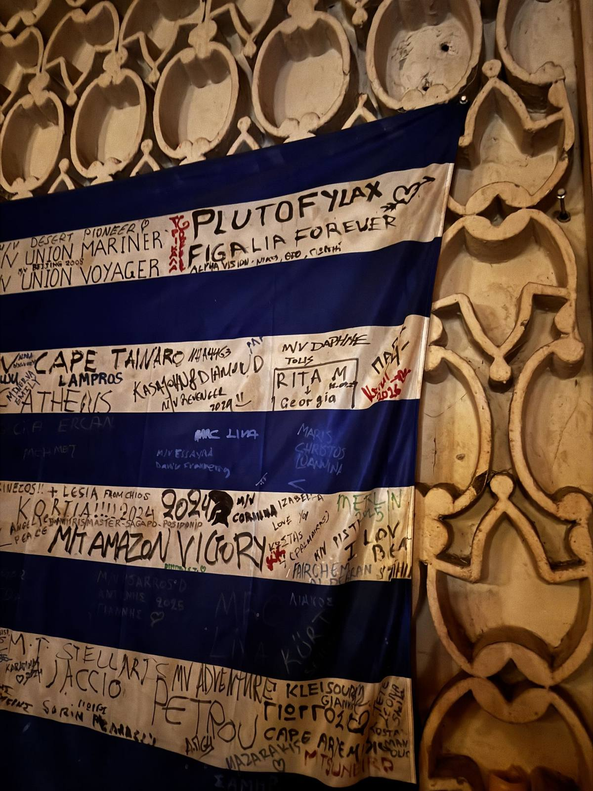
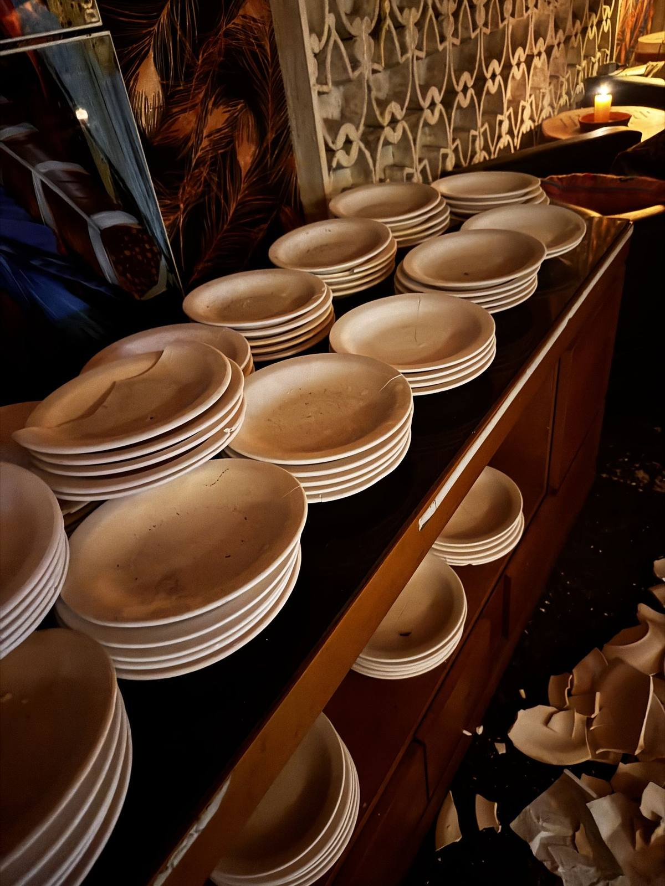
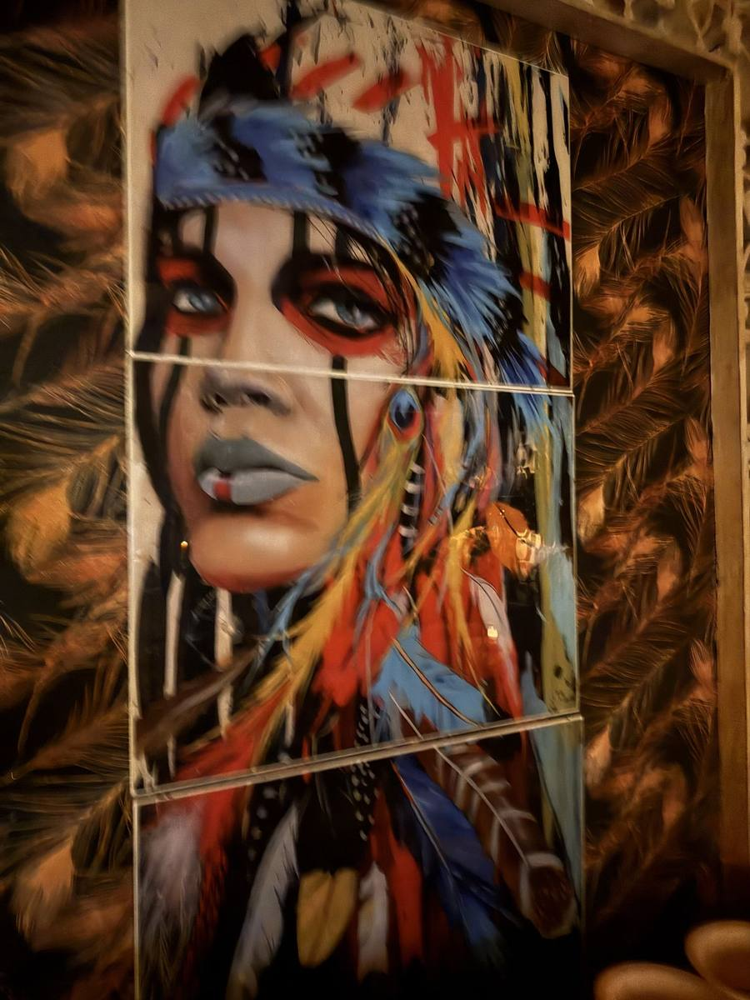

ΚΑΛΩΣ ΗΡΘΑΤΕ · Bem-vindos ao cais
A taverna grega do Porto de Santos, ao lado do Mariners Bar. Aqui os pratos quebram no chão, os navios assinam a bandeira e ninguém vai embora sem gritar ΟΠΑ!
Η ΤΑΒΕΡΝΑ · O bar
Todo porto tem um deus. O de Santos atende pelo nome de Posidonio — e serve ouzo.
Entre contêineres e guindastes, uma porta se abre para o Egeu. O Posidonio é a taverna onde tripulações do mundo inteiro desembarcam para uma noite de música grega, comida farta e louça sacrificada com alegria. Do lado de fora, o cais. Do lado de dentro, a Grécia — com paredes de barro esculpido, velas acesas e uma bandeira que conta histórias.
ΣΠΑΣΙΜΟ ΠΙΑΤΩΝ · O ritual
Pratos de barbarotina, feitos para isso. Ninguém janta neles — eles nascem para o chão.
Na Grécia, quebrar louça espanta os maus espíritos e prova que a alegria vale mais que as coisas.
Quando o prato encontra o chão, o bar inteiro responde em coro. Você vai entender na primeira vez.
Η ΣΗΜΑΙΑ · A bandeira
No salão do Posidonio, uma bandeira da Grécia é assinada há anos por tripulações em escala no porto: Cape Tainaro, Amazon Victory, Union Mariner, Daphne, Plutofylax… Capitães, cozinheiros e maquinistas — todos viram história na nossa parede. Numa das listras, alguém escreveu em grego: “Σ’αγαπώ, Ποσειδώνιο” — te amo, Posidonio.
ΣΤΙΓΜΕΣ · Momentos
Nada aqui é cenografia: o barro nas paredes, as pilhas prontas e o chão que amanhece branco de cacos.



ΕΛΑ · Visite